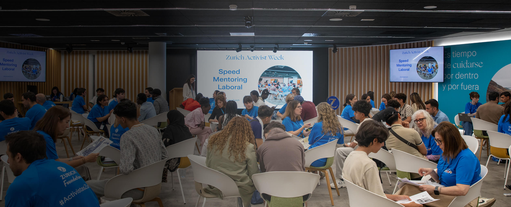
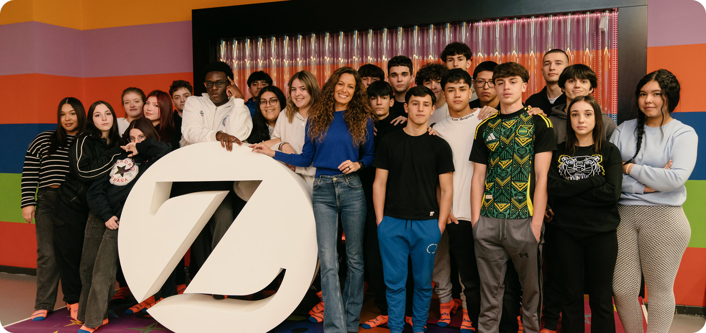

+353.741
de demandantes de empleo menores de 30 años en 2025

En colaboración con Zurich
El acceso al empleo, la salud mental y la emancipación se han convertido en algunos de los grandes desafíos de la juventud española. Ante esta realidad, empresas como Zurich Seguros apuestan por iniciativas que ofrecen oportunidades reales
Seguir leyendoEn España hay más de catorce millones de personas que tienen menos de 30 años, según los datos del último Informe del Mercado de Trabajo de los Jóvenes, elaborado por el Ministerio de Trabajo y Economía Social. Se trata de una generación preparada y conectada, pero que afronta un contexto social y laboral muy complejo, repleto de retos y oportunidades.
El acceso al mercado laboral en España es una de sus principales preocupaciones. A finales del pasado año, el número de demandantes de empleo con menos de 30 años ascendía a 353.741 personas y la tasa de paro entre los menores de 25 años se situaba en torno al 23-24%, muy por encima de la media europea, en torno al 14-15%.
+353.741
de demandantes de empleo menores de 30 años en 2025
85,5%
de los españoles de entre 16 y 29 años no han podido emanciparse
23-24%
de tasa de paro entre los menores de 25 años en España
Detrás de estas cifras hay miles de historias marcadas por la incertidumbre. Muchos jóvenes tienen formación y han desarrollado todo tipo de competencias, pero aun así se encuentran con grandes dificultades para construir un proyecto de vida independiente. Esa realidad queda muy bien reflejada por los datos del Observatorio de Emancipación de 2025, desarrollado por el Consejo de la Juventud de España. El 85,5% de los jóvenes españoles de entre 16 y 29 años no han podido emanciparse.
La suma de estas situaciones genera también un desgaste emocional. No es de extrañar, pues, que el cuidado de la salud mental se haya convertido en uno de los grandes desafíos de nuestra sociedad. La inestabilidad laboral, la presión por rendir, la exposición constante en redes sociales o la dificultad para imaginar un futuro estable tienen un impacto directo en el bienestar emocional de los más jóvenes.
Pero, al mismo tiempo, esta es también la generación que lidera las transformaciones sociales y culturales que vivimos en los últimos años. Los jóvenes han impulsado nuevas formas de trabajar y de relacionarse. Y a partir de sus convicciones y sus necesidades demandan que las empresas apoyen los nuevos valores y se comprometan con la nueva realidad social.
Acceso al empleo juvenil
Dificultad de emancipación
Impacto en la salud mental
Los jóvenes no buscan simplemente un empleo y una nómina a fin de mes. Reclaman que aquellos con quienes trabajan sean capaces de entender los desafíos de este tiempo y se impliquen con ellos en profundidad. No se trata de que hablen solo de propósito. Lo verdaderamente importante es que lo traduzcan en acciones concretas.
Y este compromiso es especialmente necesario en ciertos sectores como el asegurador, que se encuentra inmerso en un proceso de relevo generacional. Según datos de la patronal UNESPA, cerca de 50.000 profesionales del sector se jubilarán durante la próxima década.
Pero estas necesidades de contratación no han llegado a los más jóvenes. Apenas un 4% de ellos contempla los seguros como una opción profesional, pese a tratarse de un ámbito con grandes oportunidades laborales y una alta capacidad de empleabilidad. De hecho, el 72% de los jóvenes que realizan prácticas en el sector termina siendo contratado.
Solo un 4% de los jóvenes contempla los seguros como una opción profesional, pese a tener una alta empleabilidad
El 72% de los jóvenes que realizan prácticas en el sector seguros termina siendo contratado
La paradoja es más que evidente. Mientras miles de jóvenes buscan una primera oportunidad laboral y estabilidad, el sector necesita atraer nuevo talento y acercarse a esta generación. El match parece claro. Y en ese punto, compañías como Zurich Seguros han asumido su responsabilidad, situándose como agentes de la transformación social. El sentido de protección está en su razón de ser y también implica ayudar a las personas a prepararse para el futuro.
Uno de los ámbitos donde se refleja ese compromiso es en el acceso a la formación y al empleo. Especialmente en un momento en el que muchos jóvenes sienten que la experiencia laboral sigue siendo la gran barrera de entrada al mercado.
Con esa idea de fondo, desde el año 2017 Zurich Seguros impulsó el programa de FP Dual en Seguros, una iniciativa pionera que se ha convertido en uno de los grandes casos de éxito promovida actualmente desde la patronal. Desde su puesta en marcha, alrededor de 1.500 jóvenes se han formado con este modelo y 560 estudiantes están matriculados durante el curso 2025-2026.
El programa combina la propia formación académica con experiencias prácticas, acompañamiento profesional y un contacto directo con el entorno empresarial, respondiendo así a uno de los principales problemas del empleo juvenil en España, la desconexión entre lo que se estudia y lo que demanda el mercado.
Y es que son los propios jóvenes los que confiesan que la falta de experiencia supone una barrera difícil de salvar para acceder al empleo. “Uno de los principales problemas que tenemos los jóvenes para acceder al trabajo es la falta de oportunidades para conseguir una primera experiencia laboral”, explica Basma el Aouadi, estudiante del programa de FP Dual en Seguros. “Muchas veces se exigen años de experiencia para puestos junior y eso hace muy difícil empezar”, reflexiona.
Y esa barrera, precisamente, es la que consigue salvar el programa de formación profesional. “La FP Dual en Seguros nos permite participar activamente en la formación de los jóvenes”, comenta Cristina Gomis, directora de RSC de Zurich. ¿De qué forma lo hace? “Aportando conocimientos prácticos y adaptados a la realidad del sector, facilitando una transición natural hacia el empleo”, responde Gomis.
“Ha sido una motivación enorme y una prueba de que darle la oportunidad al talento joven puede marcar la diferencia”
Y el mejor ejemplo de que no son palabras vacías lo vemos en la experiencia de la propia Basma el Aouadi: “Sentir que mi esfuerzo y mi implicación eran reconocidos ha sido muy importante”, reconoce. “Ha sido una motivación enorme y una prueba de que darle la oportunidad al talento joven puede marcar la diferencia”, añade.

Esa apuesta por la empleabilidad juvenil no se queda solo en la formación teórica y práctica. También debe ahondar en el desarrollo de competencias esenciales para un mercado que vive un cambio constante.
Por eso, Zurich Seguros, en colaboración con Junior Achievement, impulsa también Z-SHAKE, un programa en el que, mediante contenidos digitales y la aportación de los docentes en los centros educativos, se aborda el desarrollo de las habilidades blandas, además de ofrecer orientación en emprendimiento a estudiantes de la ESO, Bachillerato y FP.
“La empleabilidad y el bienestar de los jóvenes son un pilar fundamental dentro de la estrategia de Zurich”, explica la responsable de RSC de la compañía. “Trabajamos sus habilidades blandas (que a nosotros nos gusta llamar habilidades de vida) a través de iniciativas como Z-SHAKE, donde potenciamos competencias como la comunicación, la adaptabilidad o la motivación”, continúa.
Todos somos conscientes de que la empleabilidad no puede desligarse del bienestar emocional. La ansiedad, la presión social o el miedo a no cumplir las expectativas forman parte de la realidad cotidiana de muchos jóvenes y cada vez más empresas asumen que crear entornos saludables también forma parte de su responsabilidad.
“Creemos que el bienestar emocional es un habilitador para el éxito personal y profesional”, afirma Cristina Gomis. “Nuestro objetivo es acompañarlos en su desarrollo integral y proporcionarles herramientas para afrontar los desafíos de la vida con resiliencia y confianza”, asegura.
Dentro de esa línea de trabajo, Zurich Seguros impulsa proyectos como el programa henka, desarrollado junto al Hospital Sant Joan de Déu, y que nace con el objetivo de dotar a toda la comunidad educativa de herramientas para fortalecer la resiliencia y el bienestar emocional de adolescentes, jóvenes y su entorno.
“Fomentar la resiliencia, conseguir unos hábitos saludables y saber discriminar aquello que es superfluo de lo que es esencial son los principales retos en los que debemos acompañar a nuestros adolescentes”
Para Eulàlia Riera Corbeto, directora de la Escola Mestral SCCL de Sant Feliu de Llobregat, uno de los centros participantes en el programa, este tipo de iniciativas tienen un impacto estructural. “Todo aquello que desde el ámbito empresarial pueda contribuir al desarrollo de iniciativas sociales, educativas o sanitarias tiene un gran valor”, señala.
Y la reacción del alumnado a estos proyectos es alentadora. “Potenciar el vínculo entre especialistas en salud mental y escuelas, ya desde los primeros cursos de la ESO, está invirtiendo de manera muy efectiva en el bienestar de adolescentes y jóvenes y, por tanto, en un futuro mejor”, destaca Riera.
La directora de l' Escola Mestral SCCL de Sant Feliu de Llobregat insiste, además, en la importancia de abordar los retos emocionales desde edades tempranas: “Fomentar la resiliencia, conseguir unos hábitos saludables y saber discriminar aquello que es superfluo de lo que es esencial son los principales retos en los que debemos acompañar a nuestros adolescentes”, reflexiona.
La relación entre empresas y nuevas generaciones también pasa por generar espacios de participación reales. En el caso de Zurich Seguros, esa filosofía se refleja en iniciativas como el Comité Joven, donde empleados menores de 40 años participan activamente en conversaciones estratégicas y en el desarrollo de nuevos proyectos con el Comité de Dirección.
“Desde el momento en que te incorporas a la compañía, los jóvenes tienen un espacio donde pueden dialogar y aportar ideas”, explica Ana González, portavoz del Comité Joven de Zurich. “La empresa nos hace partícipes de la toma de decisiones y nos impulsa a desarrollar iniciativas concretas orientadas a apoyar a otros jóvenes”, observa.
Ese enfoque ha estimulado también diferentes proyectos de voluntariado, talleres de empleabilidad o programas dirigidos a jóvenes en situación de vulnerabilidad. Ana González lo sabe de primera mano: “Formamos parte de un comité que no es simbólico: de ahí han salido iniciativas reales”, señala. “No solo proponemos ideas, también las transformamos en proyectos concretos”, agrega.
Y el alcance de este compromiso se refleja en la propia implicación de toda la comunidad de la empresa. No en vano, más de 1.850 Activistas Zurich participan cada año en iniciativas sociales impulsadas por la compañía.
Durante años, el debate sobre la juventud ha girado en torno a cifras, diagnósticos y advertencias sobre la precariedad o sobre la incertidumbre. Y somos más conscientes que nunca de que no vale simplemente con un discurso emocional y comprometido. Las iniciativas deben convertirse en oportunidades tangibles.
Porque el propósito no puede ser únicamente atraer talento joven. El objetivo debe pasar por comprender la forma en que vive una generación acostumbrada a convivir con la incertidumbre y ofrecerle las herramientas que necesita para construir un futuro más estable teniendo en cuenta sus circunstancias.
“A través de programas de formación en oficios, les ofrecemos capacitación en sectores donde existe una alta demanda de perfiles cualificados”
Por eso, nos explica Cristina Gomis, también se acompaña a jóvenes en situación de vulnerabilidad. “A través de programas de formación en oficios, les ofrecemos capacitación en sectores donde existe una alta demanda de perfiles cualificados, acompañándolos durante todo el proceso para evitar el abandono formativo”, explica.
Solo cuando los jóvenes encuentran oportunidades reales, espacios de escucha y herramientas para desarrollarse, el futuro deja de ser una promesa abstracta para convertirse en una posibilidad concreta. “A largo plazo, nuestra ambición es contribuir a una sociedad más resiliente, donde los jóvenes no solo tengan acceso a oportunidades laborales, sino también las capacidades necesarias para construir proyectos de vida sólidos y sostenibles”, concluye la directora de RSC de Zurich.